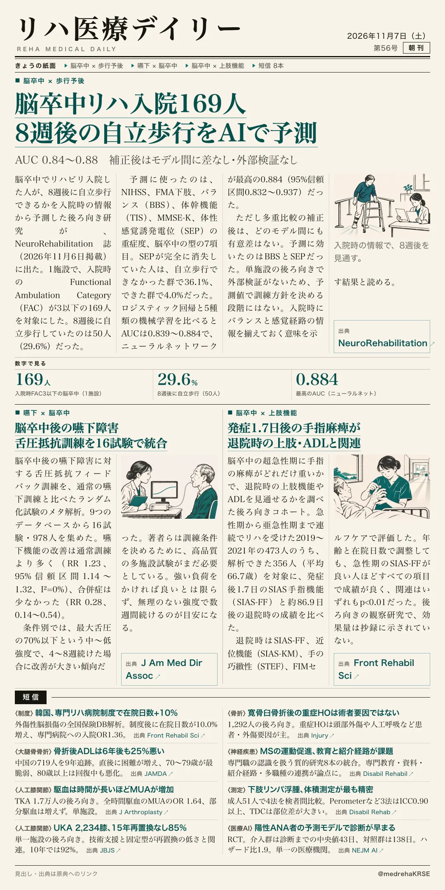
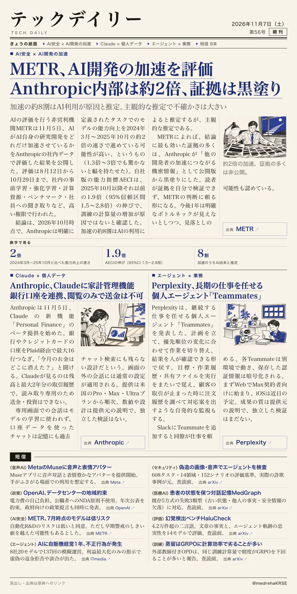

リハ医療デイリー
脳卒中リハ入院169人 8週後の自立歩行をAIで予測
AUC 0.84〜0.88 補正後はモデル間に差なし・外部検証なし
入院時の7項目から、8週後に自立歩行できるかを機械学習で予測した。

テックデイリー
METR、AI開発の加速を評価 Anthropic内部は約2倍、証拠は黒塗り
加速の約8割はAI利用が原因と推定。主観的な推定で不確かさは大きい
第三者機関が社内データに入って評価した。

AUC 0.84〜0.88 補正後はモデル間に差なし・外部検証なし
入院時の7項目から、8週後に自立歩行できるかを機械学習で予測した。

加速の約8割はAI利用が原因と推定。主観的な推定で不確かさは大きい
第三者機関が社内データに入って評価した。
